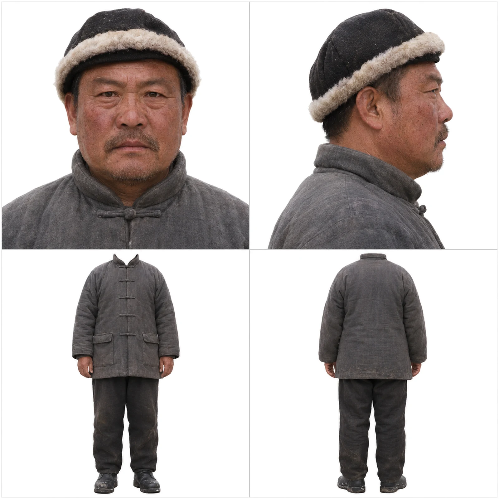
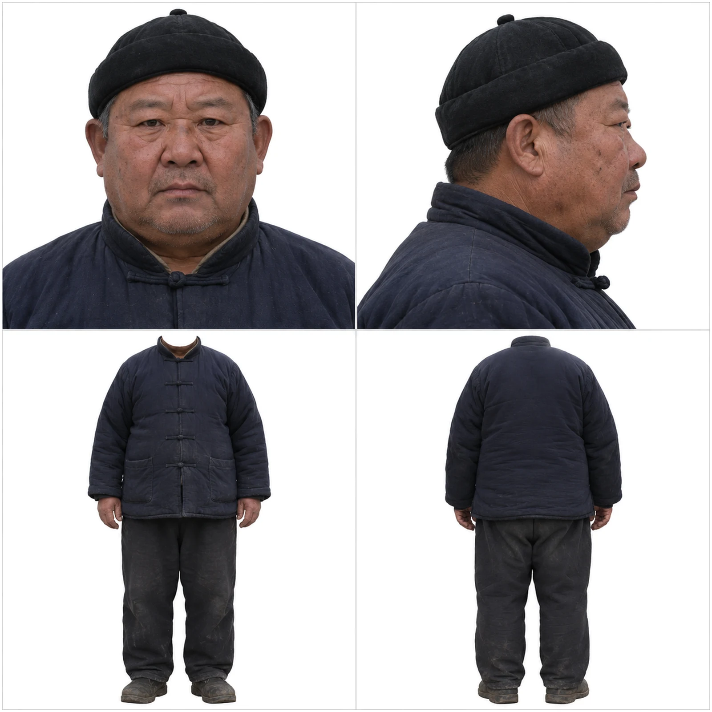
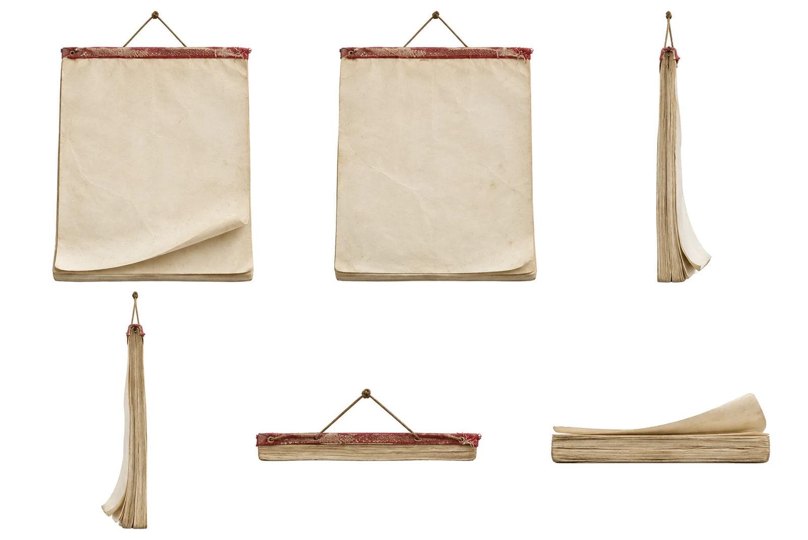
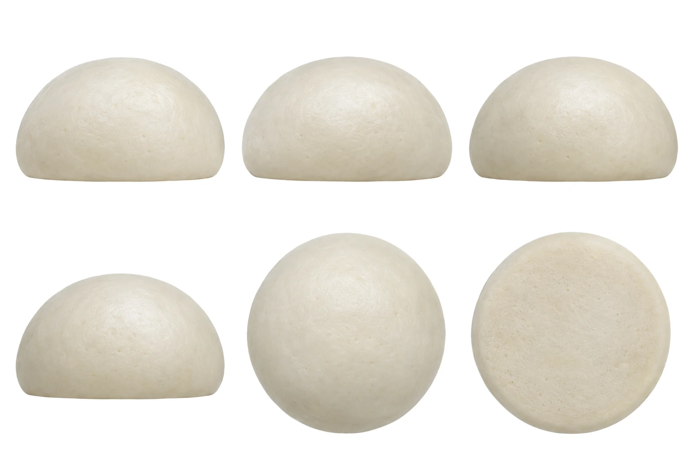
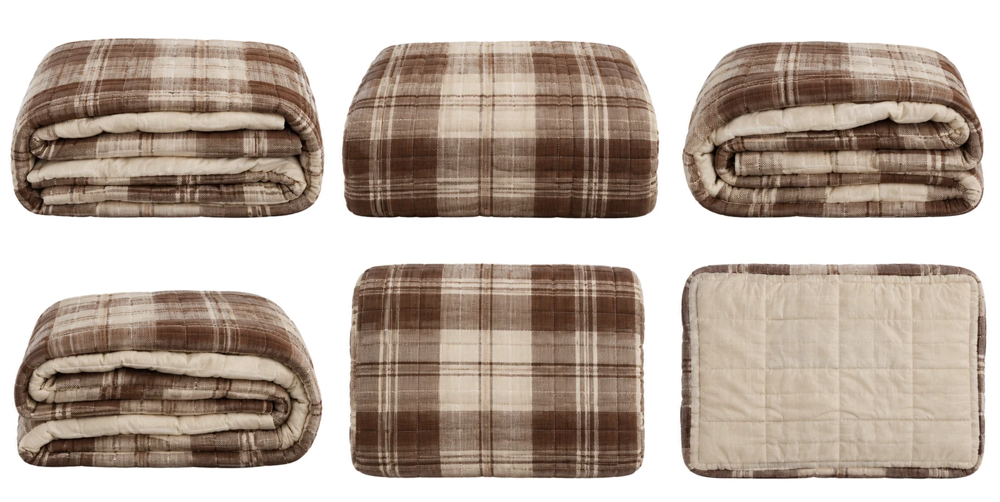
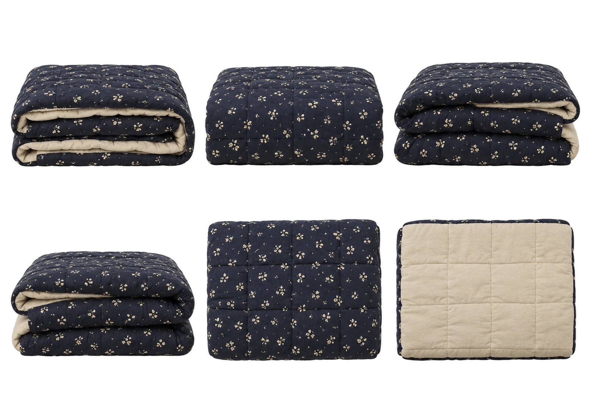

第一集
剧本与分镜
完整剧本与分镜脚本
下载原文国内短剧 · 第一集 原片时长 106.88 秒 故事梗概 林姓青年在冰雪乡村醒来，通过村道背柴和门边捧馒头的记忆判断这里的生活处境。他来到白雅琴家，白雅琴发现他与印象中的模样不同，先试探后追问，两人谈话逐渐紧张。本集停在她追问他究竟想做什么。 人物 白雅琴在家中等待并试探；林姓青年先辨认环境、再主动交涉；两名无名村民用于山路的回忆段落。 场景 白雅琴家以窗、炕面和灯为定位。积雪山路以辙迹、冷杉、木栏定位。门口雪院用旧门框建立窘迫的记忆及进屋转场。 道具用途 挂历提示年代；柴垛和馒头负责闪回中的劳动与吃食细节；两床棉被及浅罩灯建立炕边的动作与空间。 剧本与分镜 根据成片抽帧重建。引号内为画面可辨字幕，其他对白与音效为复拍稿补写。时长按本版镜头分配。 | 镜号 | 画面内容 | 镜头视角 | 使用资产 | 动作描述 | 台词/旁白 | 音效 | 单镜头时长 | | 01 | 白雅琴的侧脸在窗光中转过来 | 侧前方近景 | 白雅琴、白雅琴家 | 她听见动静，压低视线后回头 | — | 窗外风、布料轻擦 | 4.00秒 | | 02 | 土墙上的老挂历 | 插入特写 | 旧挂历、白雅琴家 | 风掀起下缘一角，镜头停在纸层 | — | 薄纸响 | 4.00秒 | | 03 | 窗下白雅琴与床沿 | 炕边低机位中景 | 白雅琴、白雅琴家 | 白雅琴坐稳，隔着床沿观察来人 | — | 短促环境底音 | 5.00秒 | | 04 | 青年仰卧在带雪地面 | 近似俯拍中近景 | 林姓青年、门口雪院 | 青年突然睁眼，视线缓慢聚焦 | — | 呼吸、衣料摩擦 | 5.00秒 | | 05 | 白雅琴拢住棕格被 | 窗对面正中近景 | 白雅琴、棕格棉被 | 她双手抓住被沿，朝对面抬眼 | — | 被面摩擦 | 5.00秒 | | 06 | 青年意识到周遭不同 | 脸部正面近景 | 林姓青年 | 青年低头看衣服，停顿后抬眼 | 青年内心“穷苦年代小山村” | 过渡低音 | 5.00秒 | | 07 | 村民在雪路上指点背柴青年 | 山路纵深全景 | 灰衣村民、深衣村民、林姓青年、捆扎柴垛、积雪山路 | 青年背柴经过，两人伸手指点 | 青年内心“原生不傻” | 踩雪、柴枝挤压 | 4.00秒 | | 08 | 门框之间捧着馒头 | 门框内中近景 | 林姓青年、白面馒头、门口雪院 | 青年把馒头抬到面前，紧盯食物 | 青年内心“工分被人顶” | 门外风声 | 4.00秒 | | 09 | 木门被推开 | 手部插入接正面中景 | 林姓青年、门口雪院、白雅琴家 | 手碰粗木门板，青年站进房间 | — | 门轴轻响 | 6.00秒 | | 10 | 白雅琴裹着蓝花被防备 | 过肩反打 | 白雅琴、深蓝小花棉被 | 她收住上半身动作，握紧被边 | 白雅琴：你先进来做什么？ | 室内底音 | 6.00秒 | | 11 | 窗前一站一坐 | 侧面关系中景 | 白雅琴、林姓青年、白雅琴家、浅罩吊灯 | 青年站在炕沿前抱臂，白雅琴抬头打量 | — | 吊灯轻晃，衣袖窸窣 | 6.00秒 | | 12 | 青年占住话头 | 正面中近景 | 林姓青年、白雅琴家 | 青年稍偏头，带点笑意地说清自己来意 | 青年：咱们先把话说清楚。 | 环境底音 | 8.00秒 | | 13 | 白雅琴试探又观察 | 暖窗背光反打 | 白雅琴、棕格棉被 | 她先露笑，再收紧被边，等他回答 | 白雅琴：你这会儿倒像什么都明白。 | 窗外轻风 | 12.00秒 | | 14 | 青年听完后正色 | 脸部近景转到抱臂中景 | 林姓青年、白雅琴 | 他略抬下巴，观察对方表情 | 青年：我记得刚才的事。 | 短暂停顿 | 11.00秒 | | 15 | 谈话转为交锋 | 交替过肩近景 | 白雅琴、林姓青年、棕格棉被、白雅琴家 | 白雅琴垂眼调整被沿，青年站稳等答复 | 白雅琴：你先给我说说你的打算。 | 布料轻响 | 10.00秒 | | 16 | 青年忍住笑继续说 | 平视面部近景 | 林姓青年 | 青年抬起视线，若无其事接了一句 | 青年：那你先听我把话讲完。 | 室内安静 | 7.00秒 | | 17 | 白雅琴忍不住追问 | 正面近景 | 白雅琴、白雅琴家 | 白雅琴猛地抬头，质问后切断 | 白雅琴“林傻子你到底想怎样” | 末尾硬切 | 4.88秒 | 时长合计 106.88 秒
制作资产
角色资产 · 8 项
白雅琴 · 说明
白雅琴 身份与表演 乡村青年女子，见林姓青年突然清醒，先用玩笑观察他，随后提高警惕。 造型连续性 低束发，绯红挂脖衣裙。坐在窗下的炕沿，棕格或蓝色碎花棉被随段落披在肩背，两件被子按原片拆分为道具。 未完整入镜的身体背面、鞋裤按可见造型补全。下载说明
林姓青年 · 说明
林姓青年 身份与表演 被白雅琴叫作林傻子。醒来后以自己的口吻判断村里的处境，回屋后和白雅琴当面交涉。 造型连续性 偏分短发，旧橄榄盘扣棉衣，胸口和裤腿保留粗针缝补丁。抱臂时身体略倾，受问时收住笑。 未完整入镜的身体背面、鞋裤按可见造型补全。下载说明

灰衣村民 · 说明
灰衣村民 身份与表演 山路回忆镜头里在画面左边指向林姓青年的男性村民，姓名和台词未由画面确定。 造型连续性 灰棉袄、浅边棉帽、耐脏深裤。镜头里身体略后仰，手指向山路中央。 未完整入镜的身体背面、鞋裤按可见造型补全。下载说明

深衣村民 · 说明
深衣村民 身份与表演 山路回忆镜头里在画面右边的男性村民，与灰衣村民一道指点背柴青年。 造型连续性 深蓝冬棉衣和深色圆帽，裤脚及鞋套保持同色系。位置固定在木栏边。 未完整入镜的身体背面、鞋裤按可见造型补全。下载说明
场景资产 · 3 项
道具资产 · 12 项

旧挂历 · 说明
旧挂历 外观与材质 土墙上的垂页纸挂历。纸边翻起；图中去除文字和印刷人物。 镜头用途 日历插入镜头提示年代，仍挂在白雅琴家的窗旁。 上排前、后、左，下排右、俯、仰。未完整入镜的面采用造型推定。下载说明
捆扎柴垛 · 说明
捆扎柴垛 外观与材质 细枝条沿长轴叠放，用粗麻绳捆作方垛。 镜头用途 林姓青年在山路闪回中弯腰背负。复拍注意麻绳长度和柴捆重心。 上排前、后、左，下排右、俯、仰。未完整入镜的面采用造型推定。下载说明

白面馒头 · 说明
白面馒头 外观与材质 一只上圆下平的白面馒头，蒸皮略有细孔。 镜头用途 门框内双手接捧的特写，表现回忆中的生活窘况。 上排前、后、左，下排右、俯、仰。未完整入镜的面采用造型推定。下载说明

棕格棉被 · 说明
棕格棉被 外观与材质 棕、米、灰格纹厚棉被，米白里布。 镜头用途 白雅琴在窗下借被挡风，双手抓住翻边，保持同一格纹朝向。 上排前、后、左，下排右、俯、仰。未完整入镜的面采用造型推定。下载说明

深蓝小花棉被 · 说明
深蓝小花棉被 外观与材质 深蓝底细碎浅色花、加厚夹棉。 镜头用途 交谈时披在白雅琴身后，镜头跳切前后保持折叠和露边。 上排前、后、左，下排右、俯、仰。未完整入镜的面采用造型推定。下载说明
浅罩吊灯 · 说明
浅罩吊灯 外观与材质 米色浅圆金属灯罩，短黑垂线和暗色灯泡。 镜头用途 炕头双人中景上方的固定物，灯光布置以上方环境反射和窗光为主。 上排前、后、左，下排右、俯、仰。未完整入镜的面采用造型推定。下载说明